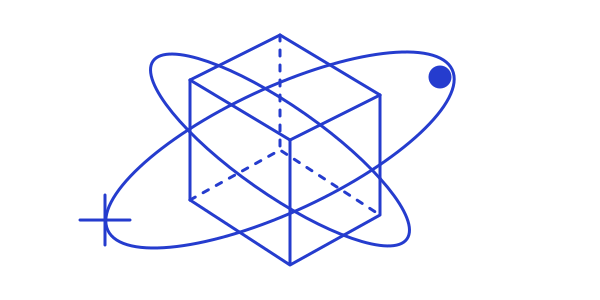

EXPERIMENT / 01
A different way
A different way
to look inside.

SKETCHSCOPESketchScope
Sketch-based volume exploration that makes internal structures tangible through gestures, touch and immersive displays.
- Built interaction across Leap Motion, VR and holographic displays.
- Extended the platform to HoloLens 2 with QR-code-based volume placement.